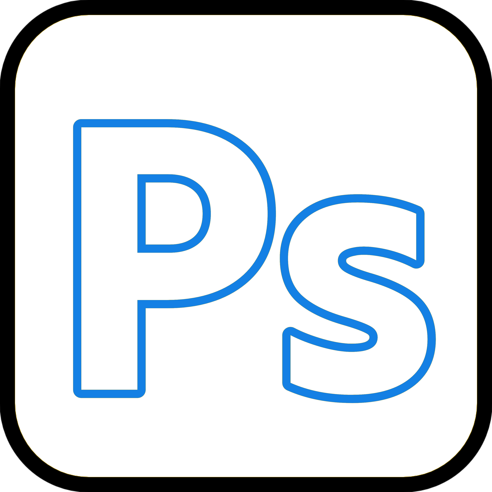
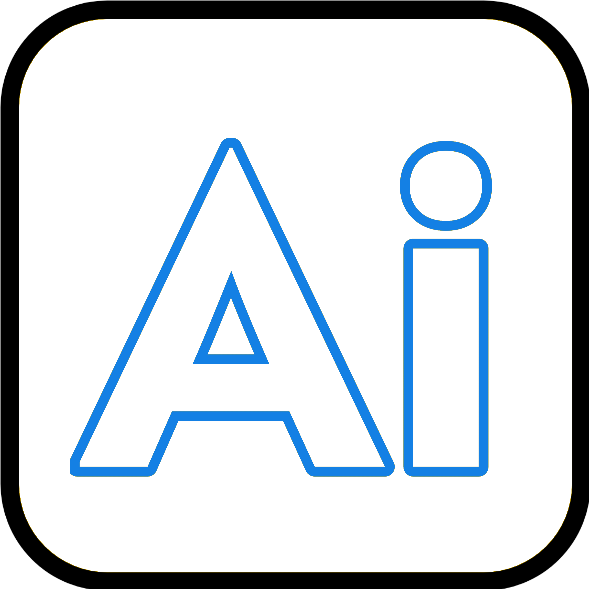
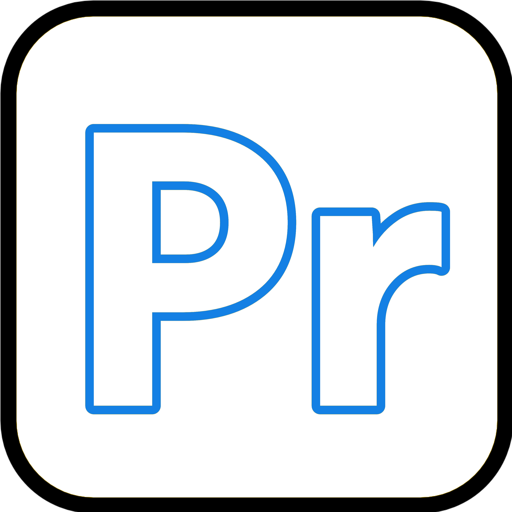
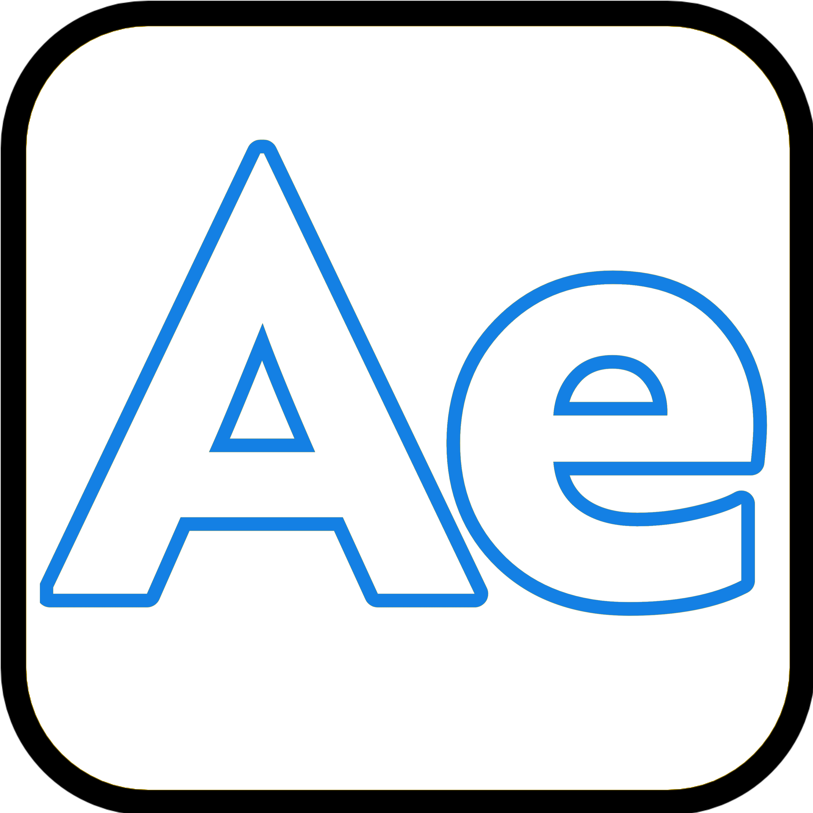
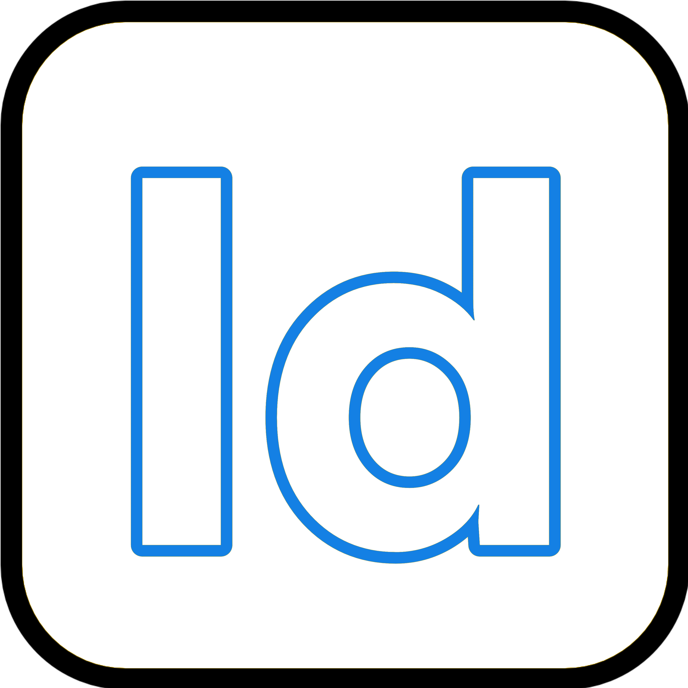

Explore the design tools I use, including Photoshop, Illustrator, Premiere Pro, After Effects, Figma, Clip Studio Paint, and other creative software.
Home
Tools

Adobe Photoshop is a proprietary raster graphics editor developed and published by Adobe. It was created in 1987 by Thomas and John Knoll and is the most widely used tool for photo editing, digital art, and graphic design.

Adobe Illustrator is a vector graphics editor developed by Adobe. Released in 1985, it is widely used for logos, icons, illustrations, and other scalable artwork across print, digital, and creative media.

Adobe Premiere Pro is a professional video editing application developed by Adobe. It is widely used for film production, YouTube content, television, and other video projects.

Adobe After Effects is a motion graphics and visual effects application developed by Adobe. It is used for animation, compositing, tracking, keying, and creating visual effects.

Adobe InDesign is a desktop publishing and page layout software. It is used to create posters, brochures, magazines, books, and ebooks. It helps designers arrange text and graphics professionally. Widely used in publishing and graphic design industries.
Ana Muhtarif Al Khat (CalliPro) is a professional Arabic calligraphy software for creating beautiful Arabic typography and artistic text designs efficiently.